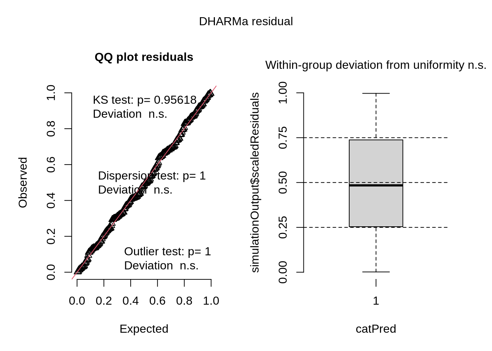
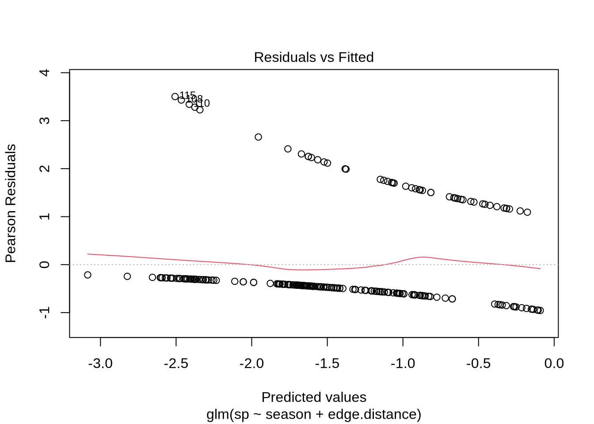
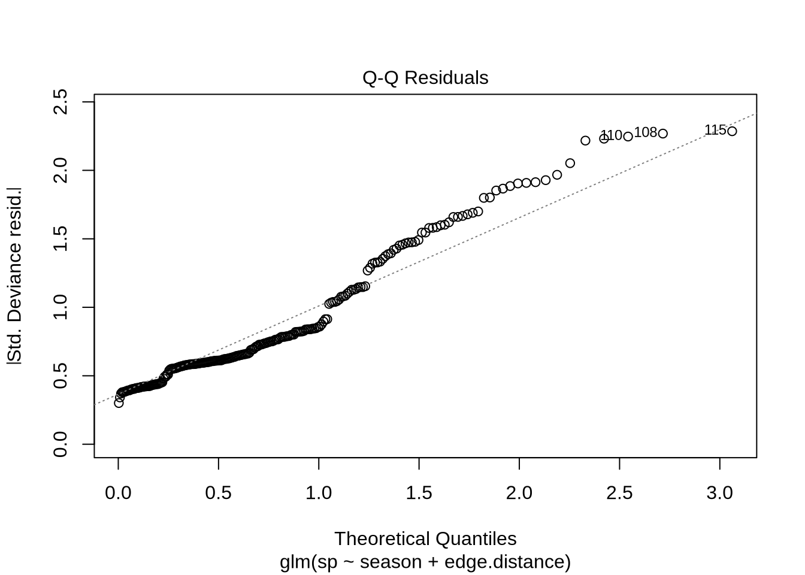
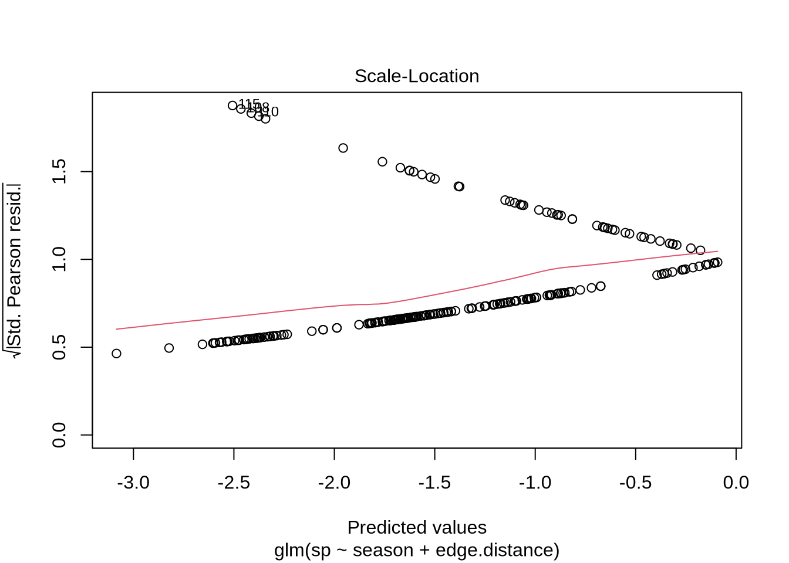
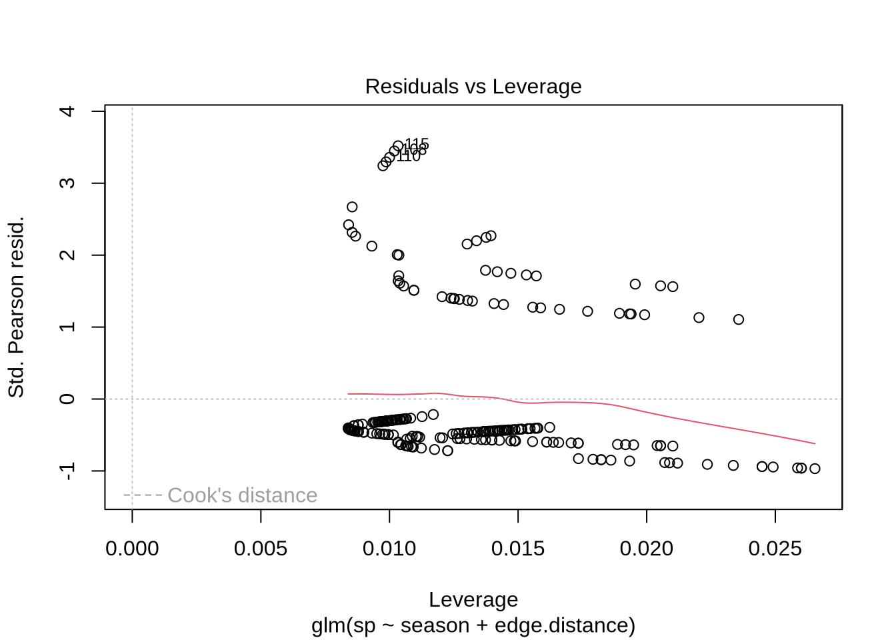
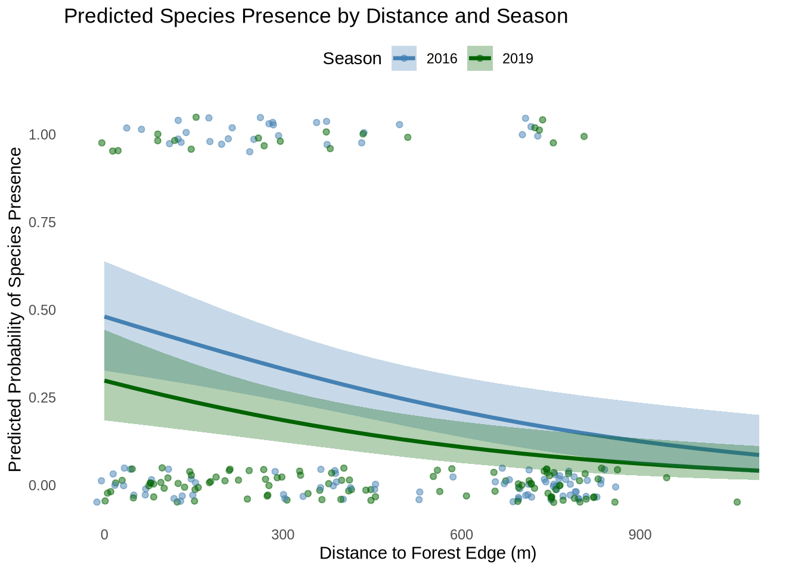

library(readxl) #allows reading excel files
library(tidyverse) #load package for data manipulation and vizualization
library(janitor) #load package for cleaning column names
library(dplyr) #package for data manipulation
library(gt) #package for themes
library(effectsize) #package to compute effect sizes
library(ggplot2) #package to create data visualization
library(lubridate) #package to manipulate dates
library(DHARMa) #packing to run residual diagnostics
library(MuMIn) #package for model selection
library(ggeffects) #package for ggpredict
sst <- read.csv("/home/jovyan/ES-193DS//Final/ENVS-193DS_spring-2025_final/data/seasurfacetemp.csv") #read in data
nest_boxes <- read.csv("/home/jovyan/ES-193DS//Final/ENVS-193DS_spring-2025_final/data/occdist.csv")Final
https://github.com/roalvarado02/ENVS-193DS_spring-2025_final.git
Problem 1: Research Writing
a. Transparent statistical methods
In part 1, they used a Pearson correlation test to compare two continuous variables. A value of 0.03 is lower than the 0.05 significance threshold meaning there is a significant linear relationship between the variables, so they rejected the null hypothesis.
In part 2, they used a one-way ANOVA test to compare a continuous variable to five categorical groups. The test was able to check if at least one group mean was significantly different from the others, and the p=0.02 indicated there was a difference so the null hypothesis was rejected.
b. More information needed
Part 2 could include effect size such as Cohen’s f to show how large the difference is. They could also use a Post-hoc pairwise comparison to determine which categorical groups are significantly different from each other.
c. Suggestions for rewriting
Part 1: We found a significant positive relationship between distance from headwaters and annual total nitrogen load, suggesting that nitrogen accumulates downstream (Pearson correlation test, r = correlation coefficient, p = 0.03, α = 0.05).
Part 2: Average nitrogen load differed significantly across source types, with higher loads from fertilizer and wastewater treatment sources compared to grasslands and urban land. (One-way ANOVA, F = test statistic, df = degrees of freedom, p = 0.02, α = 0.05; post-hoc pairwise differences; effect size).
Problem 2: Data Visualization
a. Cleaning and summarizing
sst_clean <- sst |>
clean_names() |>
mutate(
date = ymd(date),
year = year(date),
month = month(date, label = TRUE, abbr = TRUE)) |>
group_by(year, month) |>
summarise(mean_monthly_sst = mean(temp, na.rm = TRUE), .groups = "drop")
slice_sample(sst_clean, n = 5)# A tibble: 5 × 3
year month mean_monthly_sst
<dbl> <ord> <dbl>
1 1990 Oct 17.7
2 2017 Apr 13.1
3 2010 Dec 13.4
4 2013 Jul 16.8
5 2022 Aug 17.5str(sst_clean)tibble [504 × 3] (S3: tbl_df/tbl/data.frame)
$ year : num [1:504] 1982 1982 1982 1982 1982 ...
$ month : Ord.factor w/ 12 levels "Jan"<"Feb"<"Mar"<..: 1 2 3 4 5 6 7 8 9 10 ...
$ mean_monthly_sst: num [1:504] 13.1 13.5 13.3 12.9 14.4 ...b. Visualize the data
# Filter for correct years
sst_filtered <- sst_clean |> filter(year %in% 2018:2023)
ggplot(sst_filtered, aes(x = month, y = mean_monthly_sst, group = year)) +
geom_line(aes(color = factor(year)), size = 0.5) + # Thinner lines
geom_point(aes(color = factor(year)), size = 2) +
scale_color_manual(
values = colorRampPalette(c("pink", "deeppink3"))(6),
name = "Year"
) +
labs(
x = "Month",
y = "Mean monthly sea surface temperature (°C)"
) +
theme_minimal(base_size = 13) +
theme(
panel.grid = element_blank(), # Remove grid lines
legend.position = c(0.05, 0.95), # Top left corner
legend.justification = c("left", "top"), # Align top-left
panel.border = element_rect(colour = "black", fill = NA, size = 1),
legend.title = element_text(size = 11),
legend.text = element_text(size = 10)
)Problem 3: Data analysis
a. Response variable
We have rows of sp (Swift Parrots), tm (Tree Martin), cm (Common Starling), and e (empty).
A 0 means that the box was unoccupied by that species, while the 1 means the species did occupy the box or was empty.
b. Purpose of study
The main difference between Swift Parrots and the other species is that these parrots are nomadic and highly selective in choosing nests during their breeding season. The Tree Martins and Common Starlings are less selective and use the nests year-round.
c. Difference in “seasons”
The two seasons are the summer breeding seasons of 2016 and 2019. 2016 is when the nests were newly deployed and 2019 is when the nests had been in place for three years.
d. Table of models
4 models total:
| Model number | Season | Distance to forest edge | Model description |
|---|---|---|---|
| 1 | Null Model - no predictors | ||
| 2 | X | X | Saturated Model |
| 3 | X | Season Model | |
| 4 | X | Distance Model |
e. Run the models
# model 1: null model
model1 <- glm(
sp ~ 1,
data = nest_boxes,
family = "binomial")
# model 2: saturated model (season + distance + interaction)
model2 <- glm(
sp ~ season + edge.distance,
data = nest_boxes,
family = "binomial")
# model 3: season only model
model3 <- glm(
sp ~ season,
data = nest_boxes,
family = "binomial")
# model 4: distance only model
model4 <- glm(
sp ~ edge.distance,
data = nest_boxes,
family = "binomial")f. Check the diagnostics
# Model 1: Null model
mod1 <- simulateResiduals(model1)
plot(mod1)
# Model 2: Saturated model (season + edge.distance)
mod2 <- simulateResiduals(model2)
plot(mod2)# Model 3: Season-only model
mod3 <- simulateResiduals(model3)
plot(mod3)
# Model 4: Distance-only model
mod4 <- simulateResiduals(model4)
plot(mod4)g. Select the best model
AICc(
model1,
model2,
model3,
model4) |>
arrange(AICc) df AICc
model2 3 226.3133
model4 2 229.6716
model3 2 236.3744
model1 1 238.8318The best model as determined by Akaike’s Information Criterion (AIC) is model2.
plot(model2)



h. Visualize the model predictions
mod2_pred <- ggpredict(model2, terms = c("edge.distance", "season"))
ggplot(mod2_pred,
aes(x = x,
y = predicted,
color = group)) +
geom_line(size = 1.2) +
geom_jitter(data = nest_boxes,
aes(x = edge.distance, y = sp, color = factor(season)),
width = 20, height = 0.05, alpha = 0.5,
inherit.aes = FALSE) +
geom_ribbon(aes(ymin = conf.low, ymax = conf.high, fill = group), alpha = 0.3, color = NA) +
labs(
x = "Distance to Forest Edge (m)",
y = "Predicted Probability of Species Presence",
color = "Season",
fill = "Season",
title = "Predicted Species Presence by Distance and Season"
) +
theme_minimal() +
theme(
panel.grid = element_blank(),
legend.position = "top"
) +
scale_color_manual(values = c("steelblue", "darkgreen", "pink")) +
scale_fill_manual(values = c("steelblue", "darkgreen", "pink"))
i. Write a caption for your figure
Figure 1 - Predicted Probability of Swift Parrot Nest Box Occupancy by Distance to Forest Edge and Season
This figure displays modeled probabilities of Swift Parrot occupancy in nest boxes at different distances from the forest edge (0 meters to 1000 meters) and two seasons (2016 is blue and 2019 is green). The solid lines represent the predicted probability of occupancy for each season while the shaded bands showcase the 95% confidence intervals.
Data citation: Stojanovic, Dejan et al. (2021). Do nest boxes breed the target species or its competitors? A case study of a critically endangered bird [Dataset]. Dryad. https://doi.org/10.5061/dryad.83bk3j9sb
j. Calculate model predictions
pred <- ggpredict(model2, terms = c("edge.distance [0,900]", "season"))
print(pred)# Predicted probabilities of sp
season: 2016
edge.distance | Predicted | 95% CI
--------------------------------------
0 | 0.48 | 0.33, 0.64
900 | 0.12 | 0.06, 0.24
season: 2019
edge.distance | Predicted | 95% CI
--------------------------------------
0 | 0.30 | 0.18, 0.44
900 | 0.06 | 0.03, 0.13k. Interpret your results
The predicted probability of Swift Parrot nest box occupancy is higher at the forest edge (0 m) than farther away (900 m) in both seasons. 2016 has an occupancy probability of 0.48 at the edge and 0.12 at 900m while 2019 has an occupancy probablity of 0.30 at 0m and 0.06 at 900m. We can also see this correlation in the figure in part h, showing a negative relationship between distance from the forest edge and the likelihood of nest box occupancy. This pattern shows the species preferences for nesting sites closer to forest edges and that they use them less over the years because other species use them year-round while they migrate.
Problem 4: Affective and exploratory visualizations
a. Comparing visualizations
In Homework 2, my data was conveyed using statistical methods such as bar graphs and scatterplots. In Homework 3, the data was conveyed in abstract art that did not even look like data.
All the visualizations were fairly different - some being graphs and others being paintings. However, the bar graph and scatterplots both showed a negative trend as time passed.
In the statistical graphs of scatter plots and box plots, I could see a negative relationship between hours of sleep and steps taken per day. However, in the visualization for homework 3, it was more of a cyclical nature that didn’t show as much of a negative relationship. Instead, it varied between color and thickness everyday, but because they were not categories by amount of sleep gotten and instead followed a calendar, the relationship was not shown.
During week 9 of workshop, I received very helpful feedback. One note was to keep the spirals the same size rather than make them bigger as they go out in order to show the darkness and thickness of each loop. Another very helpful tip was to add a key in order for the viewer to be able to interpret the piece. I also added dates as suggested, but I did not add a moon and star to signify the end of one day and the start of another because it would have been too repetitive with 30 spirals.
b. Sharing your affective visualization
Done in class.